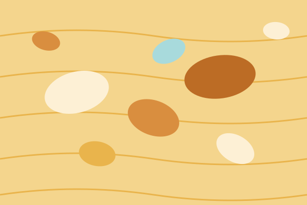
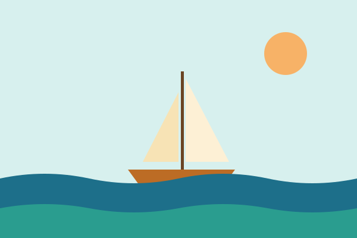
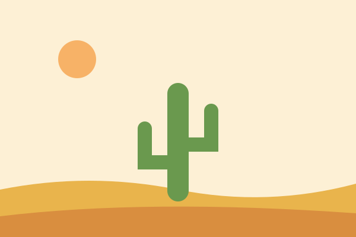
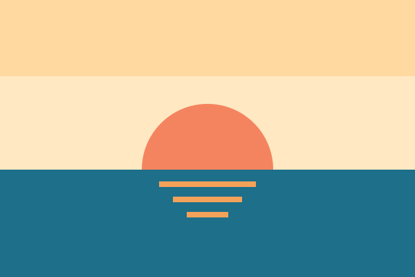
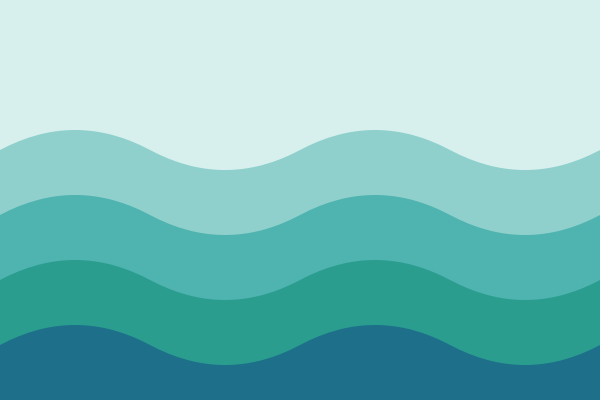
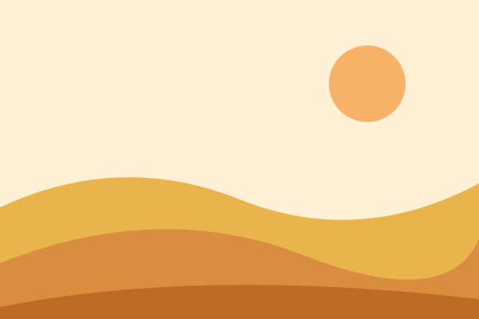
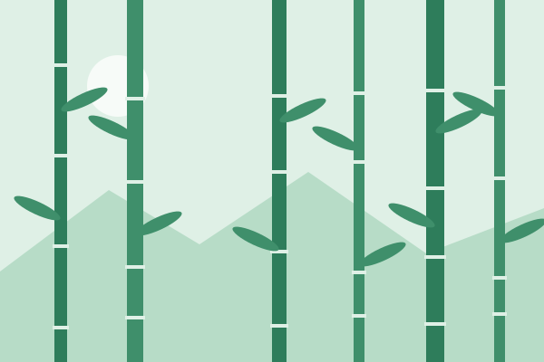
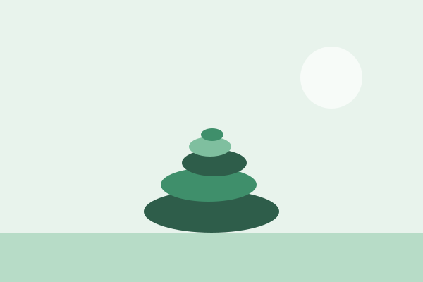
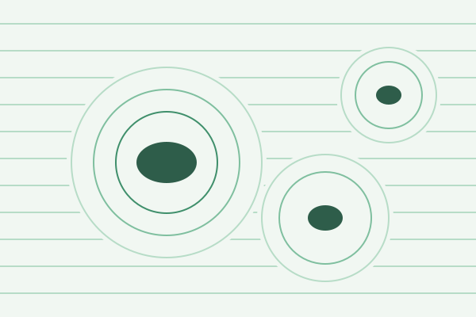
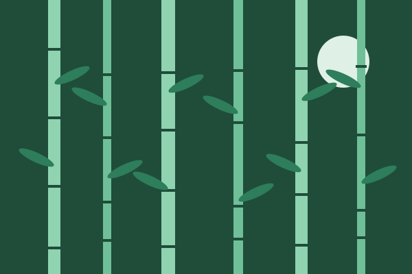

Guide passo passo sugli strumenti digitali
Lo spazio di lavoro tutto-in-uno che raccoglie note, link, liste e tabelle in un solo posto: il tuo second brain, gratuito e sincronizzato ovunque.

Assegna a ogni cartella un’icona diversa e riconoscila a colpo d’occhio, senza leggere il nome: due minuti su Mac e su Windows.

Una schermata unica con tutte le newsletter a cui sei iscritto e la disiscrizione in un clic: fai riemergere le email importanti dal rumore di fondo.

L’app Drive ha uno scanner integrato che salva PDF già ritagliati e filtrati direttamente nelle cartelle giuste: niente più file sparsi o fotocopiatrici da decifrare.

Trascrive in automatico le riunioni Google Meet in tempo reale: recuperi decisioni e accordi senza prendere un solo appunto a mano.

Sistema le finestre in layout predefiniti con un clic: mezzo schermo, quarti, terzi, per lavorare e confrontare senza trascinare a mano.

Raggruppa le schede del browser in cluster con nome e colore: uno scaffale ordinato per ogni progetto.

Un setup gratuito in due step che trasforma una richiesta in italiano in dati strutturati pronti per Google Fogli: niente codice, niente copia-incolla.

Un foglio Google pronto all’uso che trasforma i voti in istogramma e curva a campana interattiva: capisci com’è andata la verifica in 10 secondi, senza formule.

L’AI di Google che risponde solo sui materiali che carichi: guide di studio, quiz, mappe e audio overview per la flipped classroom, senza allucinazioni.

Oltre 30 strumenti AI dentro Classroom per progettare lezioni, griglie, quiz e materiali differenziati in minuti invece che ore.